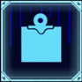
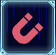

Sheikah
Geschichte
Sheikah waren eine Hochkultur vor 10 000 Jahren und die Erfinder der meisten antiken Technologie. Sie wurden so mächtig dass das Königshaus Hyrules ihnen grenzen setzten. Die Sheikah teilten sich in zwei gruppen auf die Sheikah welche ab nun dem Königshaus unterstanden und die Yiga abtrünnige Sheikah welche sich Ganon zuwandten
Module
Modue sind Starke fähigkeiten der Sheikah welche Link durch einen "Sheikahstein" benutzen kann
Bomben
Erschafft eine Bombe, die auf Knopfdruck explodiert. Die Explosion kann Gegner verletzen und bestimmte Objekte zerstören. Nach der Explosion dauert es einige Sekunden, bis eine neue erschaffen werden kann. Es existieren sowohl kugel- als auch würfelförmige Bomben. Die Kugelbombe kann hühel runterrollen die Würfelbombe hingegen bleibt liegen. Beide Bombenarten sind leicht genug, dass sie von starkem Wind beeinflusst werden bei der Würfelbombe halt nicht so stark wie bei der Kugelbombe.
Magnet
Lässt dich metallene Objekte bewegen egal ob kleine Schwerter oder große Metallkisten welche dreimal so groß sind wie Link. Ein Objekt oder Gegenstand aus Metall kann aus der Ferne erfasst und innerhalb eines bestimmten Radius frei im Raum bewegt werden. Genannte Gegenstände können auch auf Gegner geschleudert werden oder für Puzzle verwendet werden.
Stasis
Haltet die Zeit für ein Objekt an für kurz an. Objekte, deren Zeit angehalten wurden, bewegen sich für einige Sekunden nicht mehr, auch wenn sie geschoben oder durch etwas angestoßen wird. Schlägt man ein gestopptes Objekt, wird die Bewegungsenergie gespeichert. Diese Bewegungsenergie wird freigesetzt, wenn die Zeit wieder weiterläuft und das Objekt bewegt sich in die entsprechende Richtung. Je öfter man das gestoppte Objekt schlägt, desto mehr wird gespeichert und desto schneller und stärker wird das Objekt am Ende beschleunigt. Somit können sogar sehr große Objekte bewegt werden.

Cryonis
Errichtet bis zu drei Säulen aus Eis von einer Wasseroberfläche. Die errichteten Eissäulen sind stabil und können zum hochklettern oder Schild verwendet werden. Alle Säulen sind immer gleich groß und können sowohl auf horizontalen, als auch an vertikalen Flächen erzeugt werden, z.B. an einem Wasserfall. Nach dem. Mit dem modul können Säulen erzeugt und zerstört werden. Es können maximal drei Säulen gleichzeitig bestehen, wenn man versucht eine vierte zu generieren wird die erste daraufhin zerstört